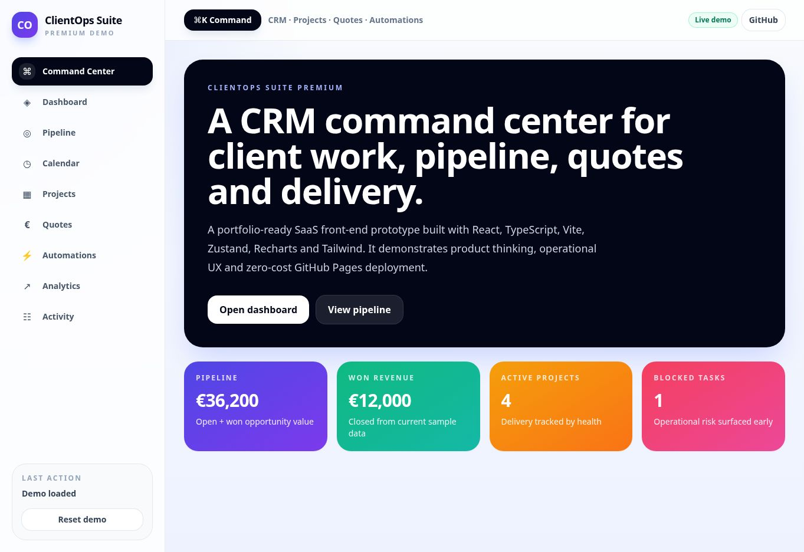

Problemă
Datele despre client, programări, ofertare și livrare ajung în instrumente separate, iar riscul și următoarea acțiune devin greu de urmărit.
Un command center pentru ciclul complet al clientului: lead, booking, ofertă, livrare, automatizare, analytics și account health — publicat ca demo verificabil, fără backend plătit.
Datele despre client, programări, ofertare și livrare ajung în instrumente separate, iar riscul și următoarea acțiune devin greu de urmărit.
Am modelat un workspace unic, cu stare locală resetabilă, module legate semantic și un cockpit separat pentru retenție și renewals.
Evaluatorul poate urmări același client din pipeline până la health score și playbook, folosind un demo public fără cont sau servicii externe.

Valorile sunt citite din setul demo resetabil, nu din utilizatori reali. Ele pot fi reproduse prin Reset demo → Command Center și sunt folosite pentru verificarea fluxului, nu ca rezultate comerciale.
| Arie | Dovadă |
|---|---|
| Stack | React 18, TypeScript, Vite, Zustand, Recharts, Tailwind CSS |
| Arhitectură | HashRouter, stare local-first, modul static premium și build GitHub Pages-safe |
| Ownership | Concept, structură UX, implementare front-end și documentație — Laura Andreea |
| Setup | npm install → npm run dev; verificare cu npm run build |
| Limitare | Demo single-browser; autentificarea, sync-ul multi-device și integrările externe nu sunt prezentate ca producție |